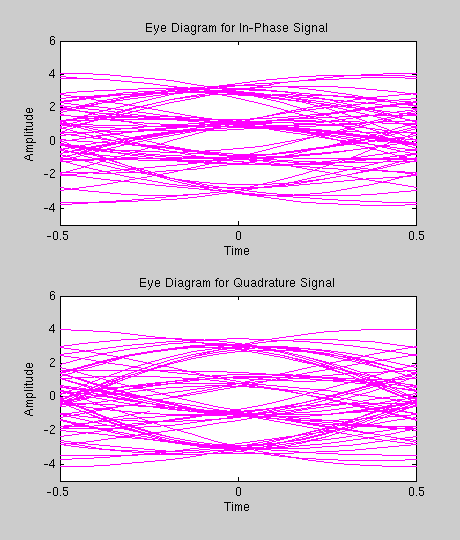
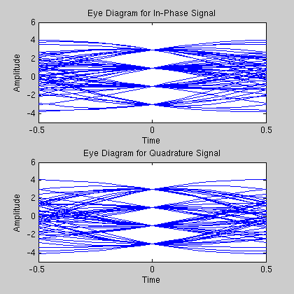

This is a demonstration of the Communications Toolbox functions EYEDIAGRAM and SCATTERPLOT. It shows how to use the functions in analyzing communication systems.
Plotting a modulated, filtered signal using PLOT does not display the characteristics of the modulation as clearly as the eye diagram and scatter plot. The eye diagram overlays many short segments, called traces, to reveal the signal characteristics. The scatter plot samples the signal at the symbol time and displays it in signal space. The sampling rate of 16 highlights the plotting functions' capability.
N = 16; Fd = 1; Fs = N * Fd; Delay = 3; Symb = 60; offset=0; M = 16; msg_orig = randsrc(Symb,1,[0:M-1],4321); msg_tx = qammod(msg_orig,M); [y, t] = rcosflt(msg_tx, Fd, Fs); plot(t, real(y));
EYEDIAGRAM is used to plot multiple traces of a modulated, filtered signal to demonstrate the shape of the modulation. There is one plot for the in-phase component and another for the quadrature component.
% Create the eye diagram. h1 = eyediagram(y, N); % Move the figure to the right-hand side of the screen. ss = get(0,'ScreenSize'); fp = get(h1,'position'); set(h1,'position',[ss(3)*.99-fp(3) ss(4)*.9-fp(4) fp(3:4)]);
EYEDIAGRAM can also be used to plot a real signal. yReal is the real or in-phase component of y. EYEDIAGRAM senses that the signal is real and only creates one pair of axes.
% Create the eye diagram. yReal = real(y); h2 = eyediagram(yReal, N); % Manage the figures. close(h1(ishandle(h1))) fp = get(h2,'position'); set(h2,'position',[ss(3)*.99-fp(3) ss(4)*.9-fp(4) fp(3:4)]);
EYEDIAGRAM in the previous slides plotted all of y. However, we are not interested in plotting the tails of y, which contain the early and late partial responses of the raised cosine filter. This slide demonstrates the eye diagram of yy, which does not include the tails of y. Now the characteristics of the modulation are evident. The in-phase and quadrature phase components of the 16-ary QAM each take on 4 distinct levels at the center of the eye plot and smoothly transition between levels.
% Create the eye diagram. yy = y(1+Delay*N:end-Delay*(N+2)); h3 = eyediagram(yy, N); % Manage the figures. close(h2(ishandle(h2))) fp = get(h3,'position'); set(h3,'position',[ss(3)*.99-fp(3) ss(4)*.9-fp(4) fp(3:4)]);
EYEDIAGRAM can also plot multiple symbols in a trace. The figure shows EYEDIAGRAM plotting two symbols per trace.
% Create the eye diagram. NumSym = 2; h4 = eyediagram(yy, N*NumSym, NumSym); % Manage the figures. close(h3(ishandle(h3))) fp = get(h4,'position'); set(h4,'position',[ss(3)*.99-fp(3) ss(4)*.9-fp(4) fp(3:4)]);
You may adjust the eye diagram so the open part of the eye is not at the center of the axes. This code shows how EYEDIAGRAM can be called to plot the closed part of the eye in the center of the axes.
% Create the eye diagram. h5 = eyediagram(yy, N, 1, N/2); % Manage the figures. close(h4(ishandle(h4))) fp = get(h5,'position'); set(h5,'position',[ss(3)*.99-fp(3) ss(4)*.9-fp(4) fp(3:4)]);
SCATTERPLOT generates a scatter plot, which is a plot of the in-phase versus quadrature components of the signal, decimated by a factor that is usually set to the number of samples per symbol, N. The resulting plot shows the received signal sampled at the symbol rate. When the channel is noiseless and distortionless, the symbols are identical to the information symbols at the transmitter.
% Create the scatter plot. h6 = scatterplot(yy, N); % Manage the figures. close(h5(ishandle(h5))); fp = get(h6,'position'); set(h6,'position',[ss(3)*.99-fp(3) ss(4)*.9-fp(4) fp(3:4)]);
SCATTERPLOT is executed twice to generate this plot. The cyan line represent the in-phase versus the quadrature component of the received signal trajectory in signal space. The blue dots represent the signal at the symbol sampling times. This plot demonstrates that, even though the signal moves about in signal space, its value equals the value of the original signal when sampled at the symbol boundaries.
% Create the scatter plot. h7 = scatterplot(yy, 1, 0, 'c-'); hold on; scatterplot(yy, N, 0, 'b.',h7); hold off; % Manage the figures. close(h6(ishandle(h6))); fp = get(h7,'position'); set(h7,'position',[ss(3)*.99-fp(3) ss(4)*.9-fp(4) fp(3:4)]);
This code plots the signal with noise added to it (red line). Even though the noisy signal can be differentiated from the original signal (blue line), it is still difficult to determine the effect the noise has on the signal. The signal to noise ratio (SNR) for the noisy signal is 15 dB.
% Close the figure. close(h7(ishandle(h7))); % Create the plot. SNR = 15; sig_rx = awgn(msg_tx,SNR,'measured',1234,'dB'); [fsig_rx, t2] = rcosflt(sig_rx, Fd, Fs); tfsig_rx = fsig_rx(1+Delay*N:end-Delay*(N+1),:); plot(t, real(y),'b-', t2, real(fsig_rx),'r-');
These figures are eye diagrams of the original signal (blue lines) and the noisy signal (red lines). The eye diagrams clearly demonstrate the variation in the received signal from the transmitted signal due to the noise added to the signal.
% Create the eye diagrams. h(1) = eyediagram(yy, N,1); h(2) = eyediagram(tfsig_rx, N,1,0,'r-'); % Move the eye diagram figures to the side of the screen. fp = get(h(1),'position'); set(h(1),'position',[ss(3)*.99-fp(3) ss(4)*.9-fp(4) fp(3) fp(4)]); set(h(2),'position',[ss(3)*.86-fp(3) ss(4)*.65-fp(4) fp(3) fp(4)]);
These figures are scatter plots of the original signal (blue dots) and the noisy signal (red dots). The scatter plots clearly demonstrate the variation from the transmitted signal in the received signal at the symbol boundaries.
% Create the scatter plots. h(3) = scatterplot(yy, N, 0, 'b.'); h(4) = scatterplot(tfsig_rx, N, 0, 'r.'); % Move the scatter plot figures to the bottom of the screen. fp = get(h(3),'position'); set(h(3),'position',[ss(3)*.01 ss(4)*.01 fp(3) fp(4)]); set(h(4),'position',[ss(3)*.3 ss(4)*.02 fp(3) fp(4)]);
This is a plot of the same transmitted signal received at a SNR of 20 dB (magenta line). The variations caused by noise are smaller than with the previous signal (SNR = 15 dB). In this case the eye diagrams and scatter plots are needed even more to determine the modulation characteristics.
% Close all open figures. close(h(ishandle(h))); % Plot the transmitted signal. SNR = 20; sig_rx = awgn(msg_tx,SNR,'measured',4321,'dB'); [fsig_rx2, t2] = rcosflt(sig_rx, Fd, Fs); tfsig_rx2 = fsig_rx2(1+Delay*N:end-Delay*(N+1),:); plot(t, real(y),'b-', t2, real(fsig_rx2), 'm-');
These figures are eye diagrams of the first noisy signal (red lines) and the second noisy signal (magenta lines). The eye diagrams clearly demonstrate that the variation in the second received signal is less than the first received signal. The two noisy signals are also plotted for reference.
% Create the plots. plot(t, real(fsig_rx),'r-',t2,real(fsig_rx2),'m-'); h(1) = eyediagram(tfsig_rx, N,1,0,'r-'); h(2) = eyediagram(tfsig_rx2, N,1,0,'m-'); % Manage the figures. fp = get(h(1),'position'); set(h(1),'position',[ss(3)*.99-fp(3) ss(4)*.9-fp(4) fp(3) fp(4)]); set(h(2),'position',[ss(3)*.86-fp(3) ss(4)*.65-fp(4) fp(3) fp(4)]);
These figures are scatter plots of the first noisy signal (red dots) and the second noisy signal (magenta dots). The scatter plots clearly demonstrate the variation from the second received signal is less than the first received signal at the sampling points.
% Create the scatterplots. h(3) = scatterplot(tfsig_rx, N, 0, 'r.'); h(4) = scatterplot(tfsig_rx2, N, 0, 'm.'); % Manage the figures. fp = get(h(3),'position'); set(h(3),'position',[ss(3)*.01 ss(4)*.01 fp(3) fp(4)]); set(h(4),'position',[ss(3)*.3 ss(4)*.02 fp(3) fp(4)]);
This animation of the eye diagram and scatter plot shows that they can be plotted with any offset.
% Close all open figures. close(h(ishandle(h))); % Create and animate the plots. plot(t2,real(fsig_rx2),'m-'); [h(1), h(2)] = animatescattereye(tfsig_rx2,N,.1,N,'lin',-1);

This animation of the eye diagram and scatter plot approximates the effect of timing offsets at the receiver. The offset parameter in EYEDIAGRAM and SCATTERPLOT are varied about the correct sampling time. This animates the impact in time and in signal space of sampling the received signal before and after the correct sampling time.
% Close all open figures. close(h(ishandle(h))); % Create and animate the plots. plot(t2,real(y),'b-'); animatescattereye(yy,N,.1,17,'lr',0);